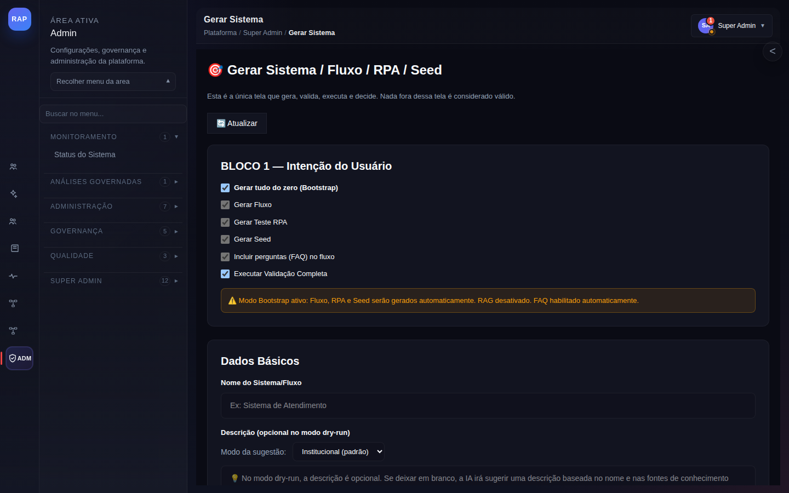
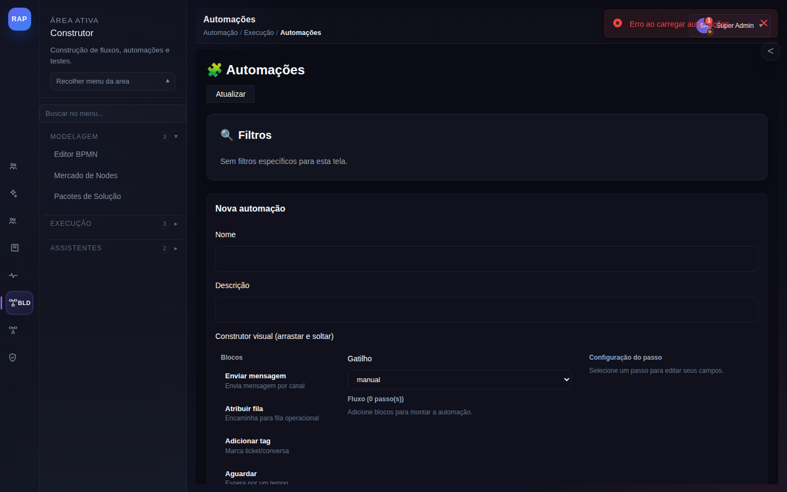
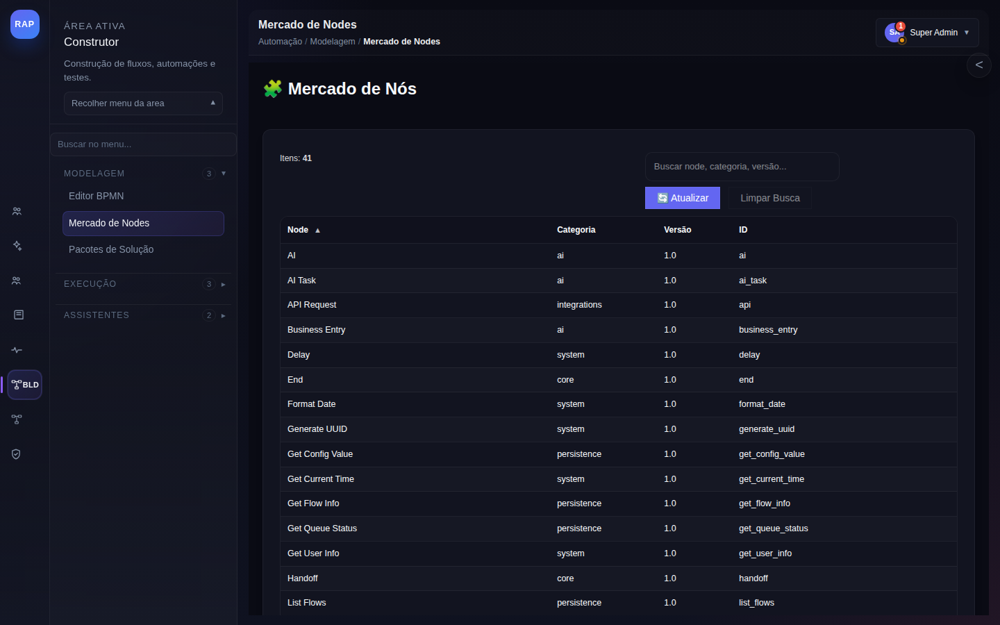
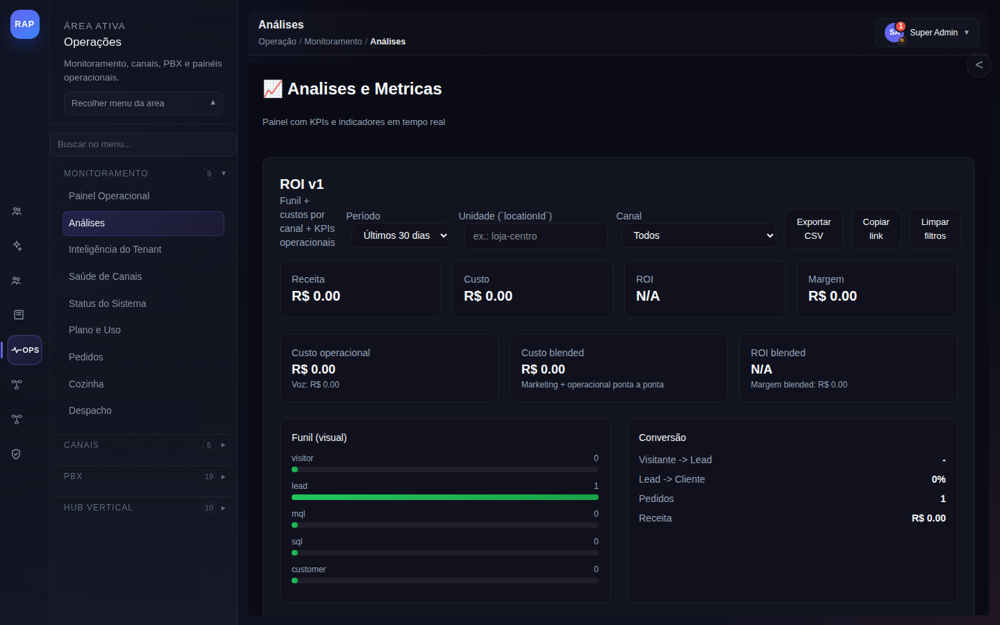

1
Publicação de Node no Marketplace
Do desenvolvimento do node à disponibilização para todos os tenants da plataforma.
Trigger: Desenvolvedor cria um node customizado (integração com sistema externo, lógica especializada) e deseja publicá-lo no marketplace para outros tenants.
PASSO 1
Criar Node
→
PASSO 2
Testar no Editor
→
PASSO 3
Publicar
→
PASSO 4
Revisão
→
PASSO 5
Disponível

/generate-system
Gerador de Nodes com IA
Use IA para scaffoldar a estrutura do novo node: schema de portas de entrada/saída, configurações, validações e código base. Reduz tempo de desenvolvimento em até 70%.
Descrever o comportamento do node para IA
IA gera schema, código e documentação
Revisar e ajustar o código gerado

/editor
Testar Node no Editor
O node em desenvolvimento aparece no editor de fluxos para testes. Adicione-o a um fluxo de teste, passe dados de exemplo e valide o comportamento das portas de saída.
Abrir editor de fluxos com node em dev
Criar fluxo de teste com dados reais
Validar todas as portas e casos de erro

/node-marketplace
Marketplace de Nodes
Catálogo de nodes disponíveis filtrado por categoria, integração e vertical. Após aprovação, o node do desenvolvedor aparece aqui para todos os tenants instalarem com 1 clique.
Submeter node para revisão da plataforma
Aguardar aprovação (QA + segurança)
Node publicado e disponível no catálogo

/analytics
Métricas de Adoção
Acompanhar instalações do node, tenants que o utilizam, execuções por período e erros reportados. Base para melhorias e versionamento do node.
Monitorar instalações após publicação
Analisar taxa de erro em produção
Publicar nova versão com melhorias